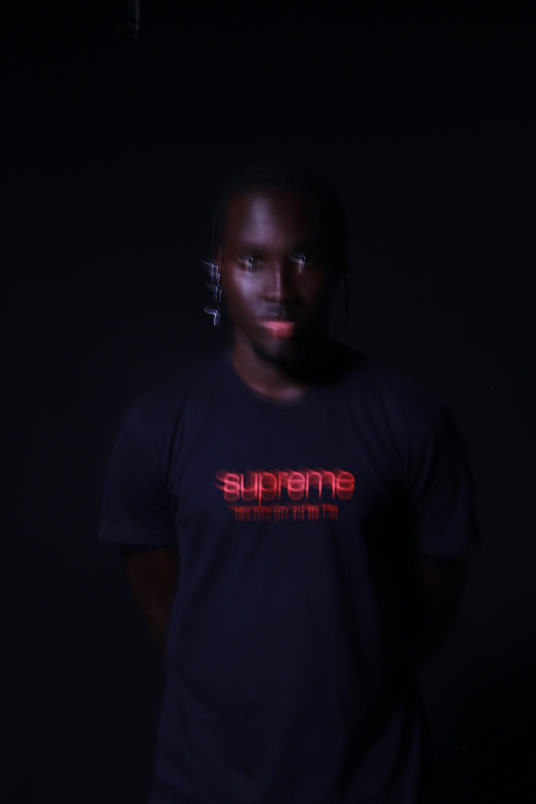

Matthew Moturi Ondeyo
student developer.
incoming fourth year @ UChicago.
machine learning engineer @ IBM in 2026

here you'll find a quick overview of my projects, for more detatailed runthroughs check out my portfolio
A comprehensive full-stack application built with Next.js, Firebase, and Tailwind CSS for efficient multi-store inventory tracking. Features real-time synchronization, responsive design, and scalable deployment on Vercel.
Advanced multi-agent RAG system processing 100+ CMS policy documents using LangGraph orchestration, AWS Bedrock with Claude Sonnet 4, and semantic analysis for intelligent healthcare policy management.